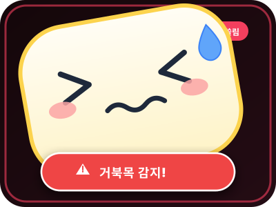
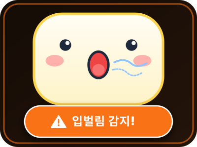
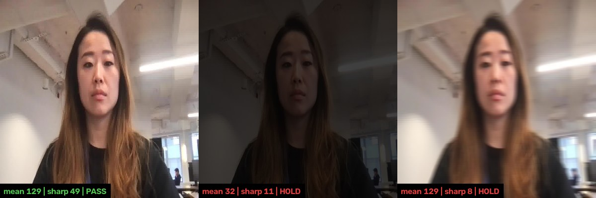
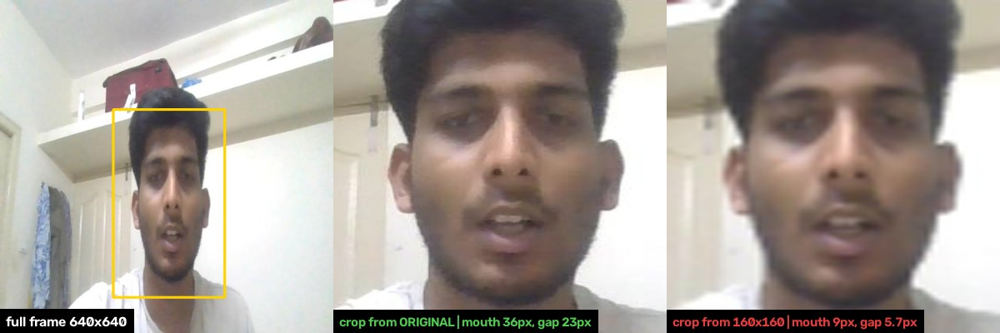
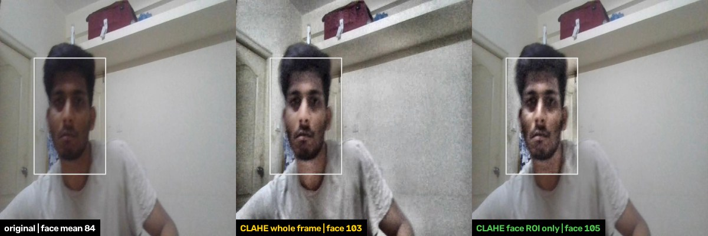
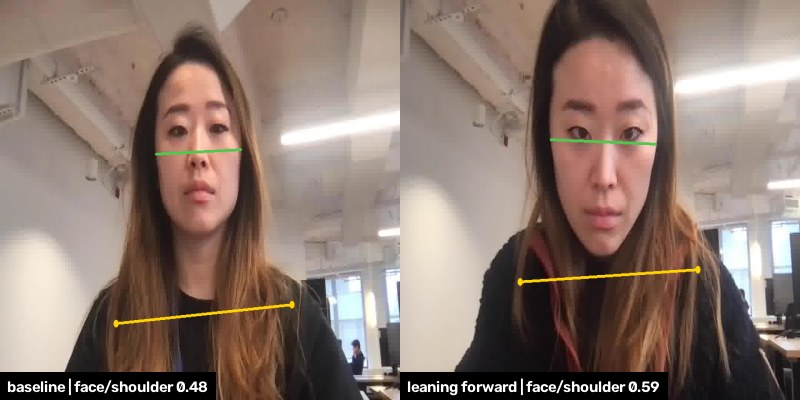
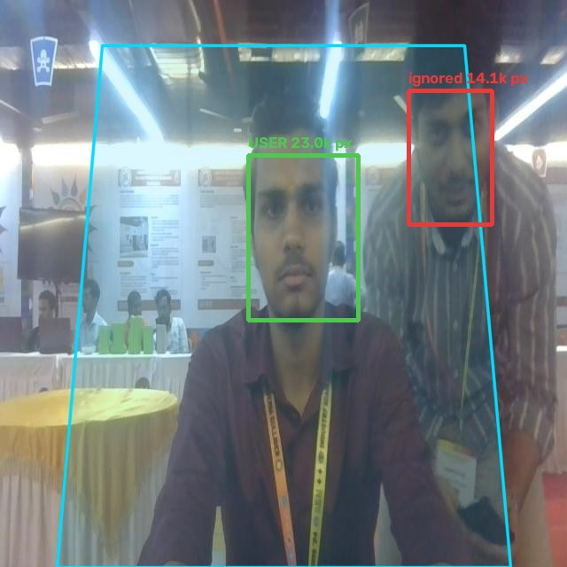
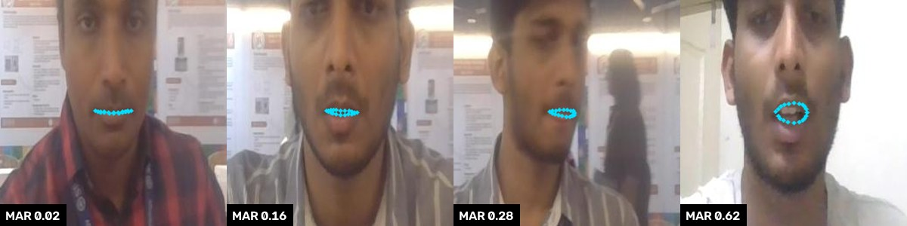

모니터 위에
가볍게 얹어두는
나만의 자세 & 호흡 AI 코치
컴퓨터에 몰입하는 순간 무의식적으로 발생하는 거북목(Forward Head Posture)과 구강 호흡(Mouth Breathing) 습관. 몸에 아무것도 걸치지 않는 독립 Vision NPU가 실시간 감지하여, 귀여운 디스플레이 캐릭터 표정으로 다정하게 바른 자세와 코호흡을 이끌어줍니다.

※ 위 수치는 PRD v1.1에서 정의한 제품(양산) 목표 지표이며, 실측 결과가 아닙니다.
왜 기존 자세 교정 제품들은
결국 지속되지 못했을까요?
피부에 닿는 답답함이나 불안한 웹캠 감시 없이, 편안하고 자연스럽게 집중을 돕는 독립형 에지 AI 코치의 차이를 소개합니다.
단순 고정 타이머 앱
사용자 실제 신체 상태와 무관하게 정해진 주기로 작동하여 실제 불량 자세가 일어난 순간을 교정하지 못하고 작업 몰입만 방해합니다.
착용형(Wearable) 센서
목이나 어깨에 장비를 직접 부착해야 하여 이물감과 착용 피로도가 크며, 턱관절과 구강 구조에 영향을 주는 '입벌림'은 감지할 수 없습니다.
PC 소프트웨어형 웹캠 분석
PC CPU/GPU 자원을 크게 점유하여 발열/렉을 유발하고, 사용자 영상이 소프트웨어를 타면서 사생활 노출 우려가 항상 뒤따릅니다.
현대인의 두 가지 습관을 실시간으로 포착
장시간 화면을 볼 때 무의식적으로 나타나는 ‘경추 전방 돌출(거북목)’과 ‘구강 호흡(입벌림)’을 실시간으로 감지합니다.
Forward Head Posture (거북목 실시간 교정)
고개가 앞으로 쏠린 상태가 오래 이어지면 경추와 어깨에 부담이 쌓이고 만성 통증으로 이어질 수 있습니다. 내장 AI 엔진은 정면 영상의 얼굴·어깨 랜드마크에서 얼굴폭/어깨폭 비율, 턱-어깨선 간격, 머리 pitch 등을 조합해 내 바른 자세 대비 변화를 실시간으로 추적합니다. (절대 경추 각도는 측정하지 않습니다)

Mouth Aspect Ratio (입벌림 & 구강 호흡 차단)
업무나 게임에 깊이 몰입할 때 턱 근육이 풀리며 나타나는 무의식적 입벌림은 구강 건조와 턱관절 부담으로 이어질 수 있습니다. 얼굴 랜드마크(입술 내측 점)의 개폐 비율(MAR)로 멍하니 벌어진 입을 감지하고, 말하기처럼 짧은 개폐 반복은 정상 움직임으로 제외합니다.

2.0인치 디스플레이 3단 실시간 반응 화면
바른 자세, 거북목, 입벌림 상태에 따라 LCD 화면이 이렇게 바뀝니다.
6단계 사용자 시나리오 및 작동 원리
센서 착용 없이, 약 10초 캘리브레이션만 마치면 자동으로 코칭이 시작됩니다. 기준 시간과 임계값은 시작값이며 PoC와 사용자 테스트로 확정합니다.
- 1 거치 · USB 연결
- 2 약 10초 중립 자세 영점
- 3 실시간 NPU 분석
- 불량 습관이 기준 시간 이상 지속?
단말기 거치 & USB 연결
모니터 상단 중앙에 두고 USB 케이블을 연결합니다. 설치 가이드가 얼굴 위치·정면 정도·어깨 가시성이 허용 설치 범위(사용 거리 50~80cm 등) 안인지 확인하고, 벗어나면 위치 재조정을 안내합니다.
약 10초 중립 자세 영점 조절
카운트다운 후 바른 자세와 입을 다문 상태를 약 10초간 유지하면 개인별 얼굴·어깨 기준값과 입 닫힘 기준을 수집합니다. 움직임이 크거나 표본이 부족하면 재촬영을 요청하며, 이 기준은 사용 중 자동으로 갱신되지 않습니다.
온디바이스 NPU 실시간 분석
기기 내부 NPU가 얼굴 랜드마크(10~15fps)와 상반신 포즈(3~5fps)를 독립 추론합니다(주기는 시작값, 실측으로 조정). 가려짐·화질 불량 구간은 오판정 대신 판정을 보류합니다.
기준 시간 지속 시 LCD 캐릭터 경고
거북목(개인 기준 대비 편차, 시작값 30초) 또는 입벌림(MAR, 시작값 8초)이 기준 시간 이상 지속되면 2.0" LCD에 캐릭터 경고 그래픽을 바로 띄웁니다.
사용자 자가 교정 및 복귀
디스플레이의 반응을 인지한 사용자가 턱을 당기거나 입을 다물면, 화면이 즉시 정상 응원 캐릭터로 부드럽게 전환됩니다.
로컬 DB 자동 통계 기록
불량 유지 시간과 교정 횟수 로그가 로컬 DB에만 안전하게 기록됩니다(시제품: 보드 로컬 DB, 제품: PC 컴패니언 앱 SQLite). 일/주/월별 개선 추이는 컴패니언 앱에서 확인합니다.
개인 적응 & 알림 조절
모델을 다시 학습하지 않고 통계만 갱신합니다. 입 다문 상태의 MAR 분포와 발화 패턴을 갱신하고, 사용자 피드백(오탐 신고, 알림 후 반응)에 따라 민감도·기준 시간을 허용 범위 안에서 조정하며, 조명 변화나 카메라 이동이 감지되면 재캘리브레이션을 제안합니다. 기준 자세는 자동으로 갱신하지 않습니다 (습관화된 나쁜 자세를 정상으로 학습하는 것을 방지). 알림 피로를 막기 위해 쿨다운·스누즈·일일 알림 상한을 둡니다.
하드웨어 & 엣지 AI 아키텍처
저전력 Vision NPU와 프라이버시를 우선한 독립형 하드웨어 설계 명세입니다. 시제품은 개발 보드로 검증하고, 양산 SoC는 PoC 결과로 결정합니다.
현장 조사 기반 전처리 설계
다양한 조명·카메라 위치·사용 습관에서도 같은 판정이 나오도록 설계 중인 전처리 방향입니다. 세부 파라미터는 현장 조사와 사용자 테스트로 확정하며, 판정 기준 시간과 성능 목표는 PRD를 따릅니다.
절대 각도 대신 ‘내 바른 자세 대비 변화’
정면 카메라로는 경추 각도를 직접 잴 수 없고, 카메라 높이·기울기·거리에 따라 값이 달라집니다. 그래서 약 10초 중립 자세 영점 조절로 개인 기준값을 만들고, 그 기준 대비 편차로 판정합니다.
거북목·입벌림 경로 분리
거북목은 얼굴 크기 변화가 신호이고 입벌림은 제거해야 할 잡음이라 정규화가 정반대입니다. 앞단(카메라·품질 판정)은 공유하고, 얼굴 영역 크롭부터 두 경로로 나눕니다.
픽셀 대신 좌표 단위 보정
저전력 NPU 환경을 고려해 전체 프레임 보정은 줄이고, 얼굴 영역 한정 보정과 핵심 키포인트(20~30개) 단위 보정을 중심으로 설계합니다.
전처리 파이프라인 (영상 → 좌표 → 기준 비교)
번호 순서대로 적용합니다. 각 단계에 어떤 처리를 하는지, 왜 필요한지, 그리고 왜 그 자리에 놓았는지를 함께 적었습니다.
① 영상 준비 단계
— 카메라 영상을 깨끗하게 만들고 얼굴·어깨 위치를 찾는다- 1카메라 설정 고정 무엇을 전원 주파수(60Hz)를 맞추고, 자동 노출·화이트밸런스는 완만하게 하거나 영점 조절 후 잠급니다. 왜 조명 깜빡임과 밝기 출렁임은 프레임마다 값이 흔들리는 원인입니다. 입력 자체를 안정시키는 것이 가장 싸고 효과적입니다.
- 2화면 품질 검사 무엇을 밝기와 흐림 정도를 측정해 불량 프레임은 보정하지 않고 판정을 보류합니다. 왜 너무 어둡거나 흐린 화면을 억지로 보정하면 잘못된 좌표가 나와 오탐으로 이어집니다.
- 3얼굴 위치 찾기 무엇을 축소한 프레임에서 얼굴 검출은 1~2초에 한 번만 하고, 그 사이에는 이전 랜드마크로 추적합니다. 왜 위치만 알면 되므로 작은 이미지로 충분하고, 매 프레임 검출은 NPU 부담이 큽니다.
- 4얼굴 영역 잘라내기 무엇을 원본 해상도에서 얼굴 영역(ROI)만 크롭합니다. 얼굴 기울기 정렬은 선택(기본 OFF)입니다. 왜 축소본에서 자르면 입술 간격이 1~2픽셀로 뭉개져 입벌림(MAR) 정밀도가 사라집니다.
- 5얼굴 밝기 보정 & 입력 맞추기 무엇을 대비·감마 보정을 얼굴 영역에만 적용하고(효과가 입증될 때만 도입), 모델 입력 크기와 값 범위를 정규화합니다. 왜 전체 화면에 쓰면 창문 역광·모니터 빛이 통계를 지배해 오히려 악화되고 연산량도 늘어납니다.
- 6얼굴·어깨 위치 추정 무엇을 얼굴 랜드마크는 10~15fps, 얼굴 위치 기준으로 상체 영역을 잘라 어깨 포즈는 3~5fps로 추정합니다. 왜 입은 빠르게 움직이고 어깨는 느려서 주기를 나누면 NPU 예산을 아낍니다. 포즈 모델은 사람 영역 크롭이 필요해 얼굴 위치 확보 뒤에 실행합니다.
② 좌표 정리 단계 (순서 고정)
— 점(얼굴·어깨 위치) 데이터에서 잡음과 오류를 걷어낸다- 7불확실한 점 제외 무엇을 모델이 낮은 신뢰도를 준 얼굴·어깨 점을 제외합니다. 왜 가려지거나 흐린 점은 틀린 값일 가능성이 높아 뒤 단계를 오염시킵니다.
- 8렌즈 왜곡 보정 무엇을 광각 렌즈일 때만 좌표의 왜곡을 보정합니다 (무왜곡 렌즈면 생략). 왜 화면 가장자리 어깨 좌표가 휘어 있으면 어깨폭 기준 비율이 모두 틀어집니다. 수치 계산보다 먼저 해야 합니다.
- 9튀는 값 제거 무엇을 속도 제한, Hampel 필터, 얼굴 점 간 거리의 구조 일관성으로 순간적으로 튄 점을 제거합니다. 왜 튄 값이 스무딩에 섞이면 수 프레임에 번져 검출할 수 없고 그 사이 오탐이 생깁니다. 그래서 스무딩보다 먼저 합니다.
- 10빠진 값 처리 무엇을 짧은 결측(약 0.2초)은 마지막 값을 유지하고, 길면 판정 보류, 더 길면 리셋합니다. 거북목·입벌림 각각 상태를 관리합니다. 왜 손으로 입을 가리는 구간 등에서 가짜 값을 만들지 않으면서 타이머가 불필요하게 끊기는 것을 막습니다. 이상치 제거 뒤에 해야 틀린 값으로 채우지 않습니다.
- 11떨림 완화 (One Euro 스무딩) 무엇을 점 그룹별로 거북목용·입벌림용 파라미터를 따로 두고 좌표의 미세한 떨림을 줄입니다. 왜 좌표 떨림은 기준값 근처에서 판정을 흔들리게 합니다. 이 필터는 움직일 때 지연을 최소화하면서 정지 시 떨림만 줄입니다.
- 12자세 수치 계산 무엇을 거북목: 어깨폭 기준으로 얼굴폭/어깨폭 비율, 턱-어깨선 간격, 머리 pitch를 계산합니다. 입벌림: 입 너비 기준 MAR을 계산하고 고개 숙임을 보정합니다. 왜 거북목은 얼굴 크기 변화가 신호이고 입벌림은 제거할 잡음이라 정규화 기준이 정반대입니다. 이 단계부터 두 경로로 갈라집니다.
③ 기준 비교 단계
— 내 바른 자세와 비교해 얼마나 달라졌는지 계산한다- 13내 바른 자세와 비교 무엇을 약 10초 중립 자세 영점 조절로 만든 베이스라인 대비 편차를 계산합니다 (거북목: 여러 신호의 z-score 결합, 입벌림: 개인 임계값 대비). 왜 정면 카메라로는 절대 각도를 잴 수 없고 카메라 높이·거리에 따라 값이 달라지므로, 사람마다 자기 기준과 비교해야 합니다. 베이스라인은 스무딩을 거친 값으로 계산합니다.
전처리 적용 예시
— 실제 웹캠 사진에 얼굴·어깨 인식 모델로 측정·처리한 결과
밝기 평균(mean)과 선명도(sharp, 라플라시안 분산)를 재서 기준을 벗어나면 보정하지 않고 판정을 보류(HOLD)합니다. 같은 사진을 인위적으로 어둡게·흐리게 만들어 비교했습니다. 정상 129 / 49, 어두움 32 / 11, 흐림 129 / 8. 기준(밝기 60~200, 선명도 30 이상)은 예시 시작값입니다.

말하는 중인 프레임에서 원본에서 자르면 입 너비 36px, 입 벌어진 높이 23px, 160×160으로 줄인 뒤 자르면 9px와 약 6px로 줄어듭니다(축소 비율로 환산). 입벌림(MAR)은 이 높이가 핵심이라 반드시 원본 해상도에서 크롭합니다.

얼굴이 어두운 실제 프레임(얼굴 평균 84, 전체 139)입니다. 전체에 적용해도 얼굴 밝기는 103, 얼굴 영역에만 적용해도 105로 비슷하게 올라가지만, 전체 적용은 배경 노이즈까지 증폭하고 처리 픽셀이 100%인 반면 얼굴 영역만 처리하면 처리 픽셀이 약 15%입니다. 효과가 입증되기 전까지는 기본 OFF인 후보 기법입니다.

같은 사람의 두 프레임에서 얼굴 너비(초록) ÷ 어깨 너비(노랑)를 계산했습니다. 기준 자세는 0.48, 고개를 숙이고 카메라에 다가간 프레임은 0.59로 기준 대비 +22%입니다. 이 비율 하나로 거북목을 판정하는 것이 아니라, 여러 신호를 개인 기준 대비 편차로 결합하는 방식의 한 요소를 보여주는 예시입니다.
※ 예시 이미지 출처: Roboflow Universe ‘posture_correction_v4’, Roboflow Universe ‘Exam proctoring’ (모두 CC BY 4.0)의 웹캠 사진에 측정·크롭·보정·표시를 더한 것입니다. 사진 속 인물은 해당 데이터셋의 공개 이미지이며, 처리 방식을 보여주는 예시일 뿐 이 제품의 성능을 의미하지 않습니다.
판정 확정부터 화면 전환까지 ≤ 100ms 목표
※ 현장 조사 체크리스트와 전처리 설계안을 바탕으로 한 설계 방향이며, 수치는 개발 과정에서 검증 후 확정됩니다.
후처리 적용 계획
모델이 내놓은 결과를 그대로 경고에 쓰지 않고, 걸러내고 안정화해서 정확하고 거슬리지 않는 알림만 남기는 단계입니다.
사용자 한 명만 선택
여러 얼굴이 잡히면 화면 중앙 착석 영역 안에서 가장 큰(가까운) 얼굴만 사용자로 삼아, 뒤를 지나가는 사람이나 배경 얼굴을 무시합니다. 몇 초 이상 못 찾으면 판정을 리셋합니다.
입벌림 오탐 억제 (말하기·하품·음료)
입 벌림 정도(MAR)의 시간 변화 패턴으로 일시적 동작을 나쁜 습관과 구분해 경고에서 제외합니다. 오탐율 3% 이하가 목표입니다.
히스테리시스 + 지속 시간 판정
발동 기준은 엄격하게, 해제 기준은 완만하게 두어 기준값 근처에서 판정이 깜빡이는 것을 막고, 기준 시간(거북목 30초 · 입벌림 8초, 시작값) 이상 지속될 때만 나쁜 자세로 확정합니다. 가림·화질 불량 구간은 판정을 보류합니다.
쿨다운 · 스누즈 · 일일 상한
경고 후 쿨다운, 스누즈, 일일 알림 상한을 두고(수치는 사용자 테스트로 결정), 사용자가 자세를 고치면 경고를 즉시 해제해 알림 피로를 줄입니다.
재캘리브레이션 안내
기준 자세는 자동으로 갱신하지 않고(나쁜 자세에 기준이 따라가는 것을 방지), 조명 변화·카메라 이동이 감지될 때만 재캘리브레이션을 제안합니다. 입 다문 상태의 MAR 분포와 발화 패턴은 통계로만 갱신합니다.
후처리 적용 예시
위 5가지 중 대표 기법 두 가지를 실제 웹캠 사진과 측정값으로 보여드립니다.

사용자 한 명만 선택
뒤에서 다가온 사람이나 지나가는 사람의 얼굴이 함께 잡혀도, 책상 앞 사용자 한 명의 신호만 남깁니다. 이 프레임에서는 얼굴이 2개 검출되었습니다.
- 1얼굴이 검출되면 각 얼굴의 박스 면적을 구합니다.
- 2착석 영역(청록색 구역) 안에 있는 얼굴만 후보로 삼습니다.
- 3면적이 가장 큰(가장 가까운) 얼굴 23.1k px를 사용자(초록)로 선택하고, 14.2k px인 얼굴(빨강)은 무시합니다.
- 4사용자 얼굴이 몇 초 이상 사라지면 판정 상태를 리셋합니다.
입벌림 오탐 억제 — 한 프레임이 아니라 시간 패턴으로 판단
입벌림은 입 벌림 정도(MAR)로 판단하는데, 말하기·하품·음료 섭취도 입이 열리기 때문에 한 프레임의 값만으로는 구분할 수 없습니다.

그래서 시간 패턴으로 구분합니다 (개념도, 실측 아님)
- 말하기 짧은 주기로 열고 닫힘 → 제외
- 하품 잠깐 크게 열렸다 닫힘 → 제외
- 입벌림 습관 비교적 작게 오래 유지 → 기준 시간(시작값 8초) 이상이면 경고
- 발동 기준은 엄격하게, 해제 기준은 완만하게(히스테리시스) 두어 기준값 근처에서 판정이 깜빡이지 않게 합니다.
※ 사진 출처: Roboflow Universe ‘Exam proctoring’의 웹캠 사진에 얼굴 인식·표시를 더한 것입니다(CC BY 4.0). 처리 방식을 보여주는 예시이며 이 제품의 성능을 의미하지 않습니다.
※ 적용 방향이며, 세부 기법과 수치는 PoC 검증 후 확정됩니다.
설정은 쉽게, 기록은 내 PC에만
PC 컴패니언 앱이 캘리브레이션을 안내하고, 자세 통계를 로컬 SQLite에 저장해 일·주·월별 리포트로 보여줍니다. (시제품에서는 컴패니언 앱을 제외하고 보드 로컬 DB에 기록합니다.)
캘리브레이션 · 중립 자세 영점
완료되면 개인별 얼굴·어깨 기준값과 입 닫힘 기준이 기기에 저장됩니다. 움직임이 크면 재촬영을 안내합니다.
일간 자세 리포트
React / Chart.js로 일·주·월별 추이를 시각화하며, 데이터는 로컬 DB 밖으로 나가지 않습니다.
목과 입, 두 가지에 집중합니다
범위를 좁혀 정확도와 안정성에 집중합니다. PRD v1.1이 정의한 개발 범위·제외 범위와 시제품 범위입니다.
개발 범위 (In Scope)
-
실시간 거북목 감지정면 영상의 얼굴·어깨 랜드마크 간접 신호를 조합해 개인 기준 대비 변화량을 판정 (절대 경추 각도 측정은 범위 외)
-
실시간 입벌림 감지얼굴 랜드마크 기반 구강 개폐 비율(MAR) 산출 및 감지 (개인별 임계값, 발화·가림 구간 제외)
-
온디바이스 LCD 그래픽 제어정상 · 거북목 · 입벌림 상태별 만화 캐릭터 피드백 출력
-
PC 설치 가이드 & 캘리브레이션 앱허용 설치 범위 검증, 중립 자세 영점 조절(품질 검사·재촬영), 튜토리얼 가이드 프로그램
-
USB HID/UVC 복합 통신설정값 전달 및 포즈 상태 로그 송수신 파이프라인
-
로컬 데이터 저장 & 대시보드로컬 DB 연동과 사용자 통계 리포트 화면
-
환경 보정자동노출 완만화·고정 검토와 프레임 품질 게이트(과어두움·과밝음·흐림 시 판정 보류). 이미지 보정은 효과가 입증된 경우에만 도입
-
개인 적응입 임계값·발화 패턴 통계 갱신, 피드백 기반 민감도 조정, 재캘리브레이션 제안 (기준 자세 자동 갱신 제외)
-
알림 피로 방지쿨다운, 스누즈, 일일 알림 상한 (수치는 사용자 테스트로 결정)
개발 제외 범위 (Out of Scope)
-
음성 인식 · 음성 알림시각 피드백 중심 (마이크/스피커 미사용)
-
모바일 앱 (iOS/Android)PC 데스크 환경에 집중
-
클라우드 서버 연동 · AI 추론모든 영상 처리·추론은 디바이스 내부에서 완결
-
전신 자세 교정허리·골반·어깨 불균형 등 목과 입 이외의 추적 제외
-
다국어 · 기업용 멀티 계정단일 사용자 전용 PC 컴패니언 소프트웨어
-
무선 통신 · 배터리Bluetooth/Wi-Fi, 내장 배터리 없음 (USB 유선 전용)
-
절대 경추 각도(CVA) 측정 · 측면 설치정면 설치를 전제로 개인 기준 대비 변화량으로 판정
-
사용 중 기준 자세 자동 갱신기준 자세는 사용자가 재캘리브레이션할 때만 갱신
-
마스크·모자 · 역광 창문 환경지원 범위 밖이며 품질 게이트·판정 보류로 처리
시제품(1차) 범위
알고리즘, 사용자 경험, 폼팩터를 한 번 직접 만들어 검증하는 단계입니다.
- 포함 개발 보드 + 카메라 + 디스플레이(초기엔 외부 모니터), 온디바이스 추론, 캐릭터 피드백, 보드 로컬 DB 로그, 3D 프린트 케이스
- 제외 UVC + HID 복합 장치, PC 컴패니언 앱·대시보드, 피드백 기반 민감도 조정, 8시간 가동 안정성, 제품 목표 수치(95% 등) 달성
- 개인 적응 입 다문 상태 MAR 분포와 발화 패턴의 통계 갱신에 한정
- 1차 목표 ① 정면 간접 신호와 측면 CVA의 상관 확인 ② 성공 지표를 측정할 평가 체계 구축 ③ 후보 모델 비교(FP32 → INT8 정확도, 목표 보드 지연 실측)
- 개발 단계 M1 PC에서 판정 로직 검증 → M2 개발 보드 이식 → M3 LCD·로그·개인 적응 → M4(선택) 양산 후보 SoC 이식
사용 조건과 한계
- 사용자 단일 사용자
- 설치 위치 모니터 상단 중앙, 카메라 높이는 눈높이 이상 (책상 위 거치는 별도 검증 전까지 제외)
- 사용 거리 50~80cm (가정값, 현장 확인 필요)
- 얼굴 정면 정도 정면 ±30° 이내 (시작값). 벗어나면 재설치 안내, 사용 중 이탈 시 판정 보류
- 가림 손·컵 등으로 가려지면 판정 보류
- 비지원 환경 마스크, 모자, 역광 창문
- 판정 방식 정면 간접 신호 기반 개인 기준 대비 변화 (절대 각도 아님)
6대 성능 목표 지표
제품(양산) 목표 수치이며 실측 결과가 아닙니다. 시제품의 1차 목표는 수치 달성이 아니라 지표를 측정할 수 있는 평가 체계를 갖추는 것입니다.
이벤트 단위(알림 1회 = 1건), 정면 설치(허용 설치 범위 내) 기준입니다. 정답은 측면 보조 카메라로 측정한 CVA 기반입니다.
이벤트 단위, 정답은 입술 내측 간격 라벨 기준입니다. 발화·하품·식사의 처리 규칙을 사전에 정의합니다.
판정 조건이 확정된 시점부터 LCD 화면 전환까지 100ms 이내입니다 (판정 지속 시간과 별개).
알림 중 오알림 비율입니다. 음료 섭취, 대화, 손 가림 등 정상 행동 구간을 포함해 평가합니다.
캐릭터 알림 발생 후 5초 이내에 사용자가 바른 자세로 복귀하는 비율의 목표입니다.
8시간 연속 가동 기준 프레임 드랍률 1% 이하를 목표로 합니다.
※ 평가 데이터는 습관이 있는 사용자를 포함하고 조명 조건을 다양하게 구성하며, 이벤트 약 300건 이상을 목표로 합니다(추정치, 평가 설계 시 재계산). 정확도 지표는 정답 데이터(측면 카메라 CVA, 입술 간격 라벨) 수집 방법을 PoC에서 함께 정합니다.
비즈니스 생산성 및 건강 경제학적 가치
불량 자세로 인한 불편과 집중력 저하를 줄여 조직과 개인의 생산성에 기여하는 것을 목표로 합니다.
임직원 100인 사무 조직 기준 경제성 평가 (가상 시나리오)
※ 가상의 B2B 도입 시나리오이며, 모든 금액은 PRD의 가정 값입니다. 실제 효과를 보장하지 않습니다.
행동별 기준 시간 이상 지속될 때만 알려 불필요한 방해는 줄입니다. 수치는 PoC와 사용자 테스트로 확정합니다.
친근한 캐릭터 화면으로 거부감 없이 스스로 바른 자세와 코호흡으로 돌아오도록 돕습니다.
추론은 기기 내부에서 이뤄지고, 통계 데이터는 로컬 DB(시제품: 보드, 제품: PC 컴패니언 앱)에만 기록되며 클라우드로 전송되지 않습니다.